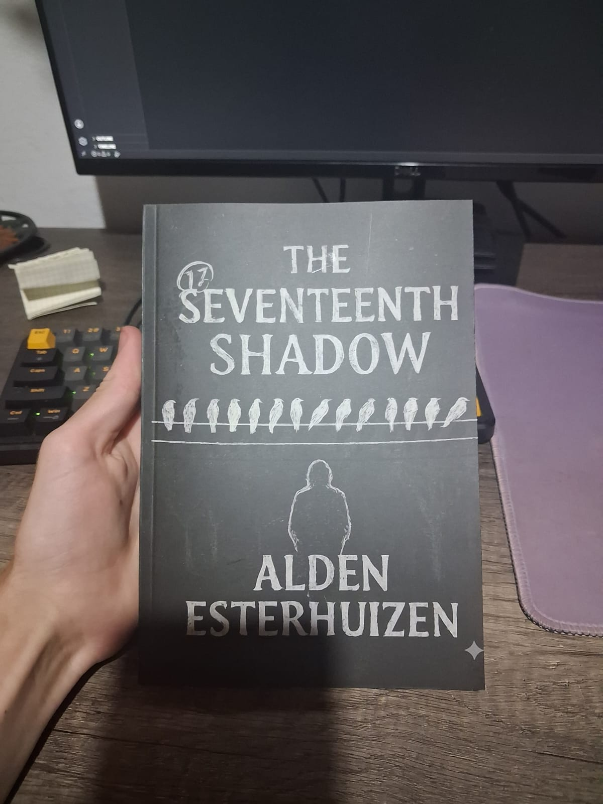

This book was written in the span of 3-4 months, I spent most of it thinking so the writing itself took maybe a month,
But after all that I am proud to say that the result it the photo that you can see,
we had 20 copies printed and kept/gave 5 to family the rest as of
writing this are still in the process of being sold, I hope that I can write more and possibly become a Published author sometime in the future.
As of now I am working on completing a DIY electric guitar build (Photos to come) and completing the Microsoft Learn course on C#